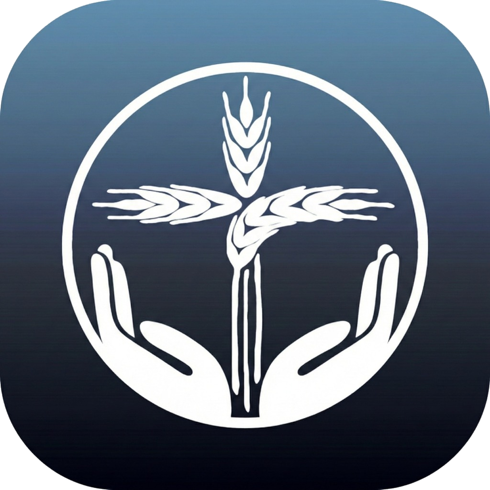

PAN BENDITO
Iglesia Evangélica
● EN DIRECTO
Santa Biblia
Nuestro canal
No hay directo disponible
Vuelve pronto. Cuando empiece la transmisión en vivo, aparecerá aquí automáticamente.
Ver culto anterior
📖 Leer Santa Biblia (RV1960 y NTV)
Visitar nuestro canal de YouTube
Santa Biblia
Abrir en YouTube